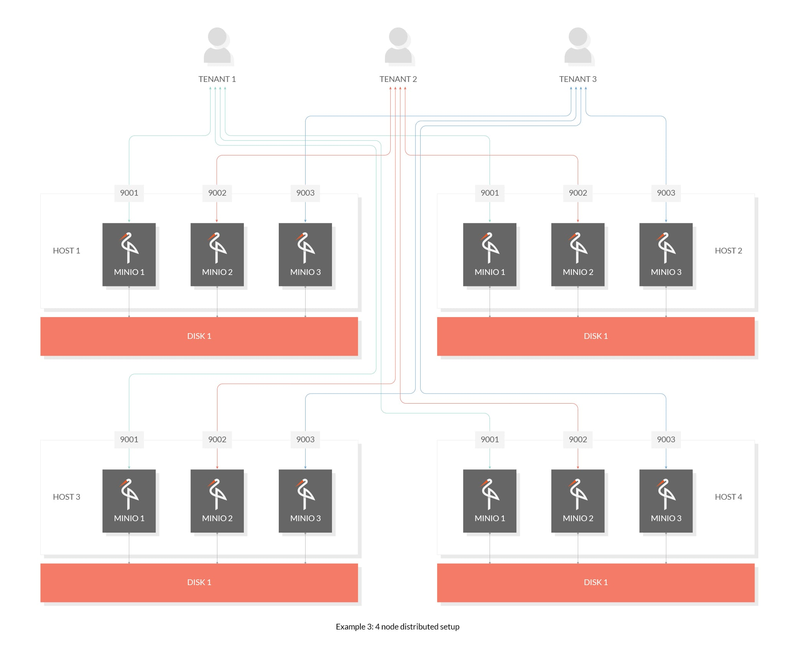

MinIO - 构建高性能的云原生数据的多云对象存储
MinIO 提供开源、高性能、兼容 s3 的对象存储，为每个公共云、每个 Kubernetes 发行版、私有云和边缘云中无缝运行，使其成为混合云和多云对象存储的领导者。
1. MinIO 的应用场景
MinIO 是一个非常轻量的服务，可以很简单的和其他应用的结合。
MinIO 是一个基于 Apache License v2.0 开源协议的对象存储服务。它兼容亚马逊 S3 云存储服务接口，非常适合于存储大容量非结构化的数据，例如图片、视频、日志文件、备份数据和容器/虚拟机镜像等，而一个对象文件可以是任意大小，从 KB 到最大 TB 不等。
- 网盘 : 海量文件
- 社交网站：海量图片
- 电商网站：海量商品图片
- 视频网站：海量视频文件
对于中小型企业，如果不选择存储上云，那么 MinIO 是个不错的选择，麻雀虽小，五脏俱全。当然 MinIO 除了直接作为对象存储使用，还可以作为云上对象存储服务的网关层，无缝对接到 Amazon S3 等。
2. MinIO 的系统特点
介绍 MinIO 服务的主要特点和特性
- [1] 高性能
MinIO是全球领先的对象存储先锋，在标准硬件上，读/写速度上高达183GB/s和171GB/s，已经成为Hadoop HDFS的替代品。MinIO用作云原生应用程序的主要存储，与传统对象存储相比，云原生应用程序需要更高的吞吐量和更低的延迟。而这些都是MinIO能够达成的性能指标。
- [2] 可扩展性
MinIO一直秉承着 “简单可扩展” 的理念，为对象存储带来了一个简单的缩放模型。借助在此基础之上，可以实现MinIO从单个群集到其他MinIO群集联合使用的情况，并且在需要时可以跨越多个不同的数据中心。
- [3] 开放全部源代码 + 企业级支持
MinIO基于Apache V2 license的100%开放源代码的产品。- 客户能够自动的、无限制、自由免费使用和集成 MinIO、自由的创新和创造、 自由的去修改、自由的再次发行新的版本和软件。其部署的多样性使软件变得更加坚固，这是专有软件无法提供的。
- [4] 混合云和多云
- 亚马逊云的
S3 API是在全球范围内达到共识的对象存储的协议。 - 当添加到数以百万计的私有云实例和广泛的边缘部署时，MinIO 是混合云的领导者。
- 亚马逊云的
- [5] 简单而强大
- 极简主义是
MinIO的指导性设计原则。简单性减少了出错的机会，提高了正常运行时间，提供了可靠性，同时简单性又是性能的基础。 - 只需下载一个二进制文件然后执行，即可在几分钟内安装和配置
MinIO。MinIO升级是通过一个简单命令完成的，这个命令可以无中断的完成MinIO的升级，并且不需要停机即可完成升级操作。
- 极简主义是
3. MinIO 的基础概念
了解如下基础概念，可以方便的理解其使用方式。
- 存储相关的概念
- 一个对象存储在一个
Set - 一个集群划分为多个
Set - 一个
Set中的Drive尽可能分布在不同的节点上 - 一个
Set包含的Drive数量是固定的，默认由系统根据集群规模自动计算
- 一个对象存储在一个
| 概念名称 | 对应含义解释 |
|---|---|
Object |
存储的基本对象；比如文件、图片等等 |
Bucket |
用于存储 Object 的逻辑空间；相互之间互相隔离；类似于系统中的顶层文件夹 |
Drive |
即存储数据的磁盘；所有的对象数据都会存储在 Drive 里面 |
Set |
即一组 Drive 的集合；分布式部署根据集群规模自动划分一个或多个 Set |
- 纠删码 - EC - Erasure Code
MinIO 使用 纠删码和校验和 机制来保证高可靠性，即便丢失一半数量(N/2)的硬盘，仍然可以恢复数据。纠删码是一种恢复丢失和损坏数据的数学算法，MinIO 采用 Reed-Solomon code 将对象拆分成 N/2 数据和 N/2 奇偶校验块。这就意味着如果是 12 块盘，一个对象会被分成 6 个数据块、6 个奇偶校验块，你可以丢失任意 6 块盘，仍可以从剩下的盘中的数据进行恢复。
纠删码的工作原理和 RAID 或者复制不同，像 RAID6 可以在损失两块盘的情况下不丢数据，而 MinIO 纠删码可以在丢失一半的盘的情况下，仍可以保证数据安全。而且 MinIO 纠删码是作用在对象级别，可以一次恢复一个对象，而 RAID 是作用在卷级别，数据恢复时间很长。MinIO 对每个对象单独编码，存储服务一经部署，通常情况下是不需要更换硬盘或者修复。MinIO 纠删码的设计目标是为了性能和尽可能的使用硬件加速。
- 对象的存储形式
文件对象上传到 MinIO 上面，会在对应的磁盘当中，以 Bucket 名称为目录，文件名称为下一级目录，文件名下是 part.1 和 xl.meta，前者是编码数据块及检验块，后者是元数据文件。
- 常见的使用方案
4. MinIO 的安装部署 - 单机
建议使用容器化安装和部署方式 - 简单和好用
需要注意的是，单机版本无法使用，版本控制、对象锁定和存储桶复制等功能。如果需要使用，是需要部署 带有纠删码的分布式 MinIO。
- 单机版 - 容器安装 - 没有纠错码版本
9000端口为自带的Web网页入库9001端口为使用API和客户端的连接口
# 内嵌了一个MinIO的对象服务
# http://127.0.0.1:9000 (minioadmin:minioadmin)
$ docker run --name=minio-test \
-p 9000:9000 -p 9001:9001 \
quay.io/minio/minio server /data --console-address ":9001"
# 启动时自定义用户和密码
$ docker run --name=minio-test \
-p 9000:9000 -p 9001:9001 \
-e "MINIO_ROOT_USER=admin" \
-e "MINIO_ROOT_PASSWORD=123456" \
quay.io/minio/minio server /data --console-address ":9001"
# Windows系统启动
$ docker run --name=minio-test \
-p 9000:9000 -p 9001:9001 \
-v D:\data:/data \
-e "MINIO_ROOT_USER=admin" \
-e "MINIO_ROOT_PASSWORD=123456" \
quay.io/minio/minio server /data --console-address ":9001"
# 设置安全秘钥启动
$ echo "admin" | docker secret create access_key -
$ echo "123456" | docker secret create secret_key -
# 使用docker-service的安全秘钥启动
$ docker service create --name="minio-service" \
--secret="access_key" --secret="secret_key" \
--env="MINIO_ROOT_USER_FILE=my_access_key" \
--env="MINIO_ROOT_PASSWORD_FILE=my_secret_key" \
quay.io/minio/minio server /data
- 单机版 - 容器安装 - 带有纠错码版本
9000端口为自带的Web网页入库9001端口为使用API和客户端的连接口
# 命令行启动
$ minio server \
/data1 /data2 /data3 /data4 \
/data5 /data6 /data7 /data8
# 容器启动
$ docker run --name=minio-test \
-p 9000:9000 -p 9001:9001 \
-v /mnt/data1:/data1 \
-v /mnt/data2:/data2 \
-v /mnt/data3:/data3 \
-v /mnt/data4:/data4 \
-v /mnt/data5:/data5 \
-v /mnt/data6:/data6 \
-v /mnt/data7:/data7 \
-v /mnt/data8:/data8 \
quay.io/minio/minio server /data{1...8} --console-address ":9001"
- 单机版 - 命令安装
9000端口为自带的Web网页入库9001端口为使用API和客户端的连接口
# MacOS
$ brew install minio/stable/minio
$ minio server /data
# linux
$ apt install minio
$ minio server /data
- 单机版 - 二进制安装
9000端口为自带的Web网页入库9001端口为使用API和客户端的连接口
# MacOS
$ wget https://dl.min.io/server/minio/release/darwin-amd64/minio
$ chmod +x minio
$ ./minio server /data
# Windows
$ wget https://dl.min.io/server/minio/release/windows-amd64/minio.exe
$ minio.exe server D:\
# Linux
$ wget https://dl.min.io/server/minio/release/linux-amd64/minio
$ chmod +x minio
$ ./minio server /data
$ ufw allow 9000:9010/tcp
$ firewall-cmd --get-active-zones
$ firewall-cmd --zone=public --add-port=9000/tcp --permanent
$ firewall-cmd --reload
5. MinIO 的安装部署 - 分布式
建议使用容器化安装和部署方式 - 简单和好用
在大数据领域，通常的设计理念都是无中心和分布式。MinIO 也提供了分布式部署的方式，其好处在于，可以提供一个高可用的对象存储服务，确保数据不会丢失和一致。MinIO 在分布式和单机模式下，所有读写操作都严格遵守 read-after-write 一致性模型。
- 命令行方式启动 - client
# 设置变量
$ export MINIO_ROOT_USER=<ACCESS_KEY>
$ export MINIO_ROOT_PASSWORD=<SECRET_KEY>
# 命令行启动方式格式
$ minio server http://host{1...n}/export{1...m}
$ minio server http://host{1...n}/export{1...m} http://host{o...z}/export{1...m}
# 命令行启动方式示例
minio server http://192.168.1.11/export1 http://192.168.1.12/export2 \
http://192.168.1.13/export3 http://192.168.1.14/export4 \
http://192.168.1.15/export5 http://192.168.1.16/export6 \
http://192.168.1.17/export7 http://192.168.1.18/export8
- 容器方式启动 - docker
version: '3.7'
services:
minio:
restart: on-failure
container_name: app_minio
image: quay.io/minio/minio:RELEASE.2021-11-09T03-21-45Z
command: server /data --console-address ":9001"
ports:
- "80:9000"
- "81:9001"
volumes:
- "/app_minio/data:/data"
environment:
MINIO_ROOT_USER: admin
MINIO_ROOT_PASSWORD: 123456
healthcheck:
test: ["CMD", "curl", "-f", "http://localhost:9000/minio/health/live"]
interval: 30s
timeout: 20s
retries: 3
networks:
- app_minio_network
networks:
app_minio_network:
- 容器方式启动 - kubernetes
# 安装MinIO的chart
$ helm install stable/minio
# 容器平台上面启动服务 - 单机
$ helm install --name minio-release \
--namespace minio
--set rootUser=rootuser,rootPassword=rootpass123
--set persistence.size=100Gi \
stable/minio
# 容器平台上面启动服务 - 分布式
$ helm install --set mode=distributed stable/minio
$ helm install --set mode=distributed,numberOfNodes=8 stable/minio
$ helm install --set mode=shared,numberOfNodes=8 stable/minio
$ helm install --set persistence.enabled=false stable/minio
6. MinIO 的安装部署 - 多租户
建议使用容器化安装和部署方式 - 简单和好用
- [1] 单主机 + 单磁盘
$ minio server --address :9001 /data/tenant1
$ minio server --address :9002 /data/tenant2
$ minio server --address :9003 /data/tenant3

- [2] 单主机 + 块磁盘 (有纠错码)
$ minio server --address :9001 /disk{1...4}/data/tenant1
$ minio server --address :9002 /disk{1...4}/data/tenant2
$ minio server --address :9003 /disk{1...4}/data/tenant3
- [3] 多主机 + 多块磁盘 (分布式+纠错码)
$ export MINIO_ROOT_USER=<TENANT1_ACCESS_KEY>
$ export MINIO_ROOT_PASSWORD=<TENANT1_SECRET_KEY>
$ minio server --address :9001 http://192.168.10.1{1...4}/data/tenant1
$ export MINIO_ROOT_USER=<TENANT2_ACCESS_KEY>
$ export MINIO_ROOT_PASSWORD=<TENANT2_SECRET_KEY>
$ minio server --address :9002 http://192.168.10.1{1...4}/data/tenant2
$ export MINIO_ROOT_USER=<TENANT3_ACCESS_KEY>
$ export MINIO_ROOT_PASSWORD=<TENANT3_SECRET_KEY>
$ minio server --address :9003 http://192.168.10.1{1...4}/data/tenant3

7. MinIO 的网页使用
安装部署完成之后，建议使用界面操作，简单好用！
- [1] 运行服务 - docker-compose
version: "3.7"
x-minio-common: &minio-common
image: quay.io/minio/minio:RELEASE.2021-11-24T23-19-33Z
command: server --console-address ":9001" http://minio{1...4}/data{1...2}
expose:
- "9000"
- "9001"
environment:
MINIO_ROOT_USER: minio
MINIO_ROOT_PASSWORD: minio123
healthcheck:
test: ["CMD", "curl", "-f", "http://localhost:9000/minio/health/live"]
interval: 30s
timeout: 20s
retries: 3
services:
minio1:
<<: *minio-common
hostname: minio1
volumes:
- data1-1:/data1
- data1-2:/data2
minio2:
<<: *minio-common
hostname: minio2
volumes:
- data2-1:/data1
- data2-2:/data2
minio3:
<<: *minio-common
hostname: minio3
volumes:
- data3-1:/data1
- data3-2:/data2
minio4:
<<: *minio-common
hostname: minio4
volumes:
- data4-1:/data1
- data4-2:/data2
nginx:
image: nginx:1.19.2-alpine
hostname: nginx
volumes:
- ./nginx.conf:/etc/nginx/nginx.conf:ro
ports:
- "9000:9000"
- "9001:9001"
depends_on:
- minio1
- minio2
- minio3
- minio4
volumes:
data1-1:
data1-2:
data2-1:
data2-2:
data3-1:
data3-2:
data4-1:
data4-2:
- [2] 启动服务
# docker-compose
$ docker stack deploy --compose-file docker-compose.yaml minio
- [3] 界面登录
8. MinIO 客户端使用
MinIO Client (mc) provides a modern alternative to UNIX commands
- [1] MC 命令行工具安装
# 容器安装
$ docker pull minio/mc
$ docker run minio/mc ls play
$ docker run -it --entrypoint=/bin/sh minio/mc
# MacOS
brew install minio/stable/mc
# Linux
$ wget http://dl.minio.org.cn/client/mc/release/linux-amd64/mc
chmod +x mc
# 自动补全
mc --autocompletion
- [2] MC 命令行参数介绍
mc xxx
alias 设置/移除/列出自定义的别名
ls 列出文件和文件夹
mb 创建一个存储桶或一个文件夹
rb 移除一个桶
cp 拷贝文件和对象
mirror 给存储桶和文件夹做镜像
cat 显示文件和对象内容
head 显示对象的第n行
pipe 将一个STDIN重定向到一个对象或者文件或者STDOUT
share 生成用于共享的URL
find 基于参数查找文件
sql 在对象上运行SQL查询
stat 显示对象元信息
mv 移动文件和对象
tree 以树的格式列出桶和对象
du 统计磁盘使用情况
retention 设置对象和桶的保留
legalhold 设置对象的合法持有
diff 对两个文件夹或者存储桶比较差异
rm 删除文件和对象
encrypt 管理桶加密配置
events 管理对象通知
watch 监听文件和对象的事件
undo 取消PUT/DELETE操作
policy 管理访问策略
tag 管理桶和对象的标签
ilm 管理桶的生命周期
version 输出版本信息
replicate 配置服务器端桶复制
admin 管理Minio服务器
update 检查软件更新
- [3] MC 服务端命令参数
mc admin xxx
service 服务重启并停止所有MinIO服务器
update 更新更新所有MinIO服务器
info 信息显示MinIO服务器信息
user 管理用户
group 管理小组
policy MinIO服务器中定义的策略管理策略
config 配置管理MinIO服务器配置
heal 修复MinIO服务器上的磁盘，存储桶和对象
profile 概要文件生成概要文件数据以进行调试
top 顶部提供MinIO的顶部统计信息
trace 跟踪显示MinIO服务器的http跟踪
console 控制台显示MinIO服务器的控制台日志
prometheus Prometheus管理Prometheus配置
kms kms执行KMS管理操作
bucket 管理MinIO服务器中定义的存储桶
- [4] 示例演示
# MinIO云存储配置
mc alias set minio http://192.168.1.51 admin 123456
mc alias set s3 https://s3.amazonaws.com admin 123456
mc alias set gcs https://storage.googleapis.com admin 123456
# 开始操作云存储 - 列出所有存储桶
mc ls play
# 创建一个桶
mc mb play/mybucket
# 上传东西
mc cp myobject.txt play/mybucket
9. MinIO Python SDK
Python 代码操作 MinIO 服务
- MinIO Python SDK for Amazon S3 Compatible Cloud Storage Slack
- Python Client API Reference
- MinIO Python SDK Examples
# 安装pip包
pip3 install minio
# file_uploader.py
from minio import Minio
from minio.error import S3Error
def main():
# Create a client with the MinIO server playground, its access key
# and secret key.
client = Minio(
"play.min.io",
access_key="Q3AM3UQ867SPQQA43P2F",
secret_key="zuf+tfteSlswRu7BJ86wekitnifILbZam1KYY3TG",
)
# Make 'asiatrip' bucket if not exist.
found = client.bucket_exists("asiatrip")
if not found:
client.make_bucket("asiatrip")
else:
print("Bucket 'asiatrip' already exists")
# Upload '/home/user/Photos/asiaphotos.zip' as object name
# 'asiaphotos-2015.zip' to bucket 'asiatrip'.
client.fput_object(
"asiatrip", "asiaphotos-2015.zip", "/home/user/Photos/asiaphotos.zip",
)
print(
"'/home/user/Photos/asiaphotos.zip' is successfully uploaded as "
"object 'asiaphotos-2015.zip' to bucket 'asiatrip'."
)
if __name__ == "__main__":
try:
main()
except S3Error as exc:
print("error occurred.", exc)